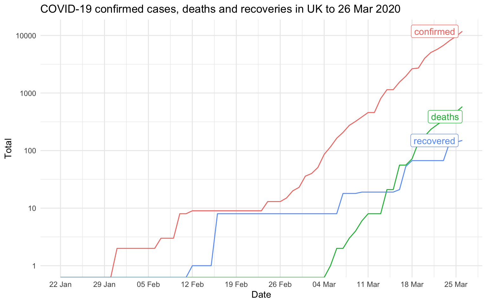
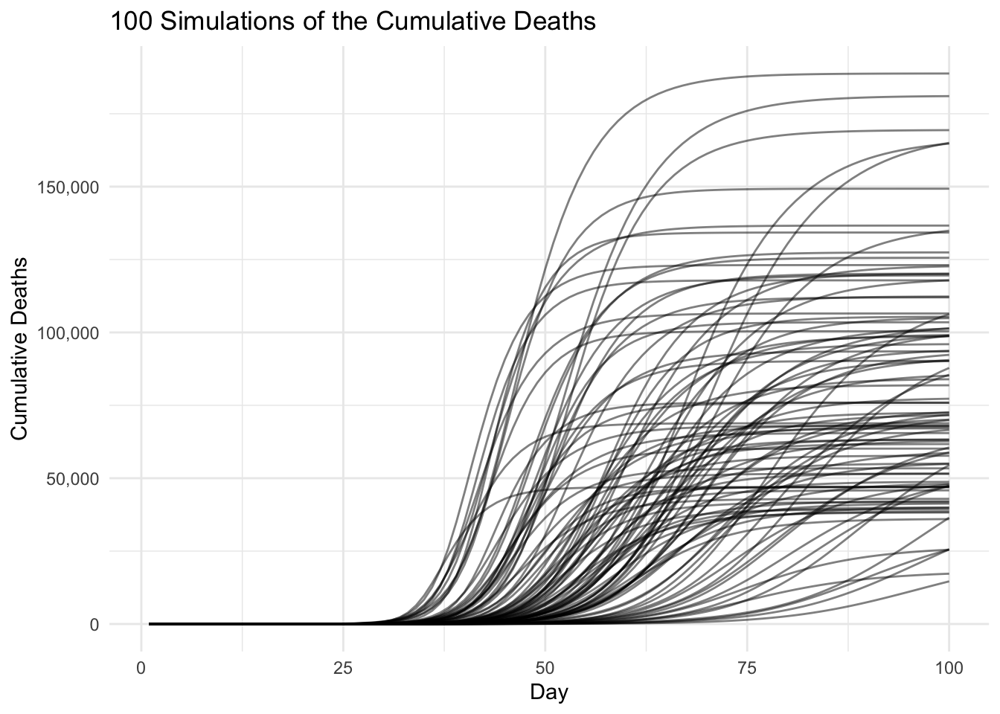
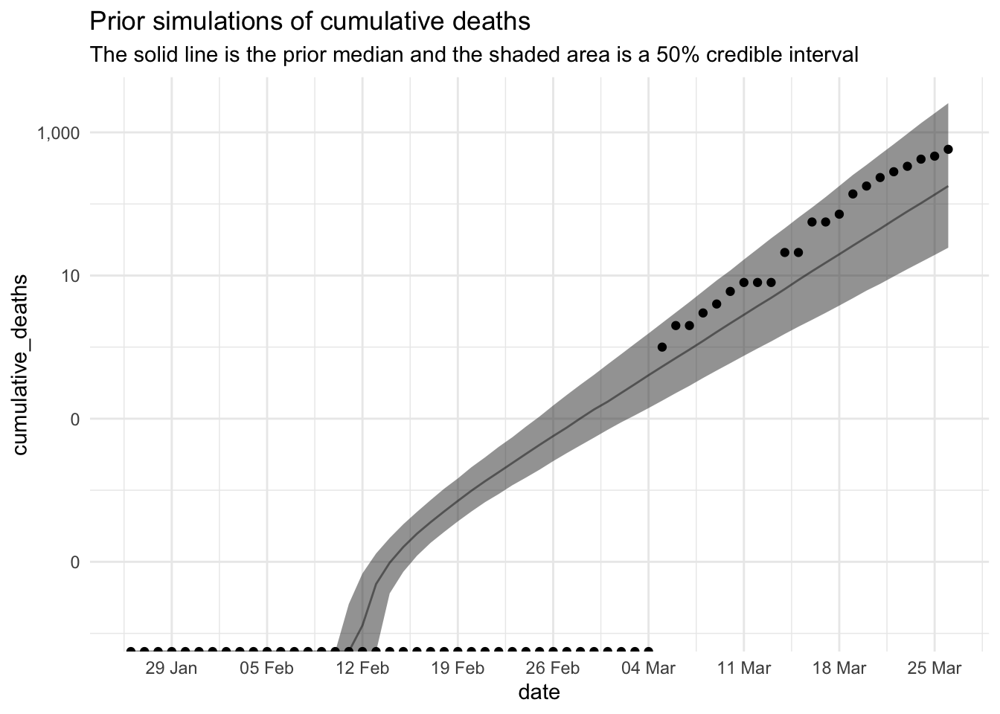
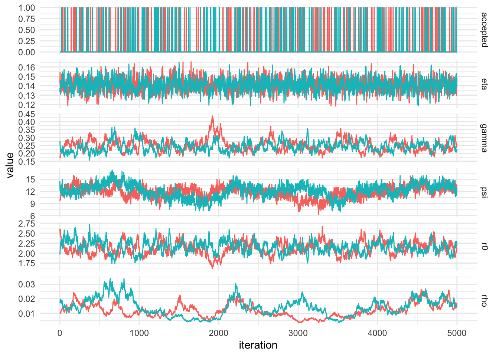
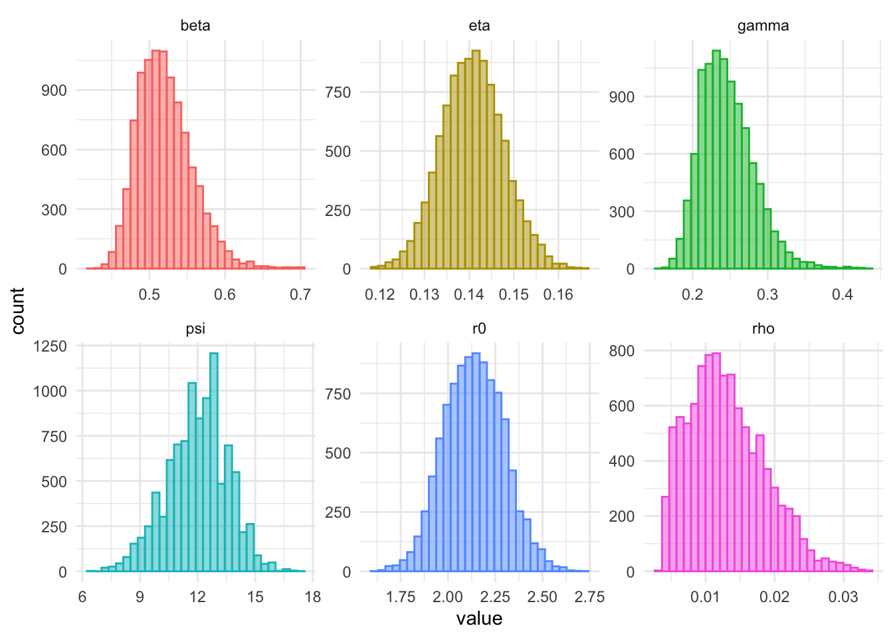
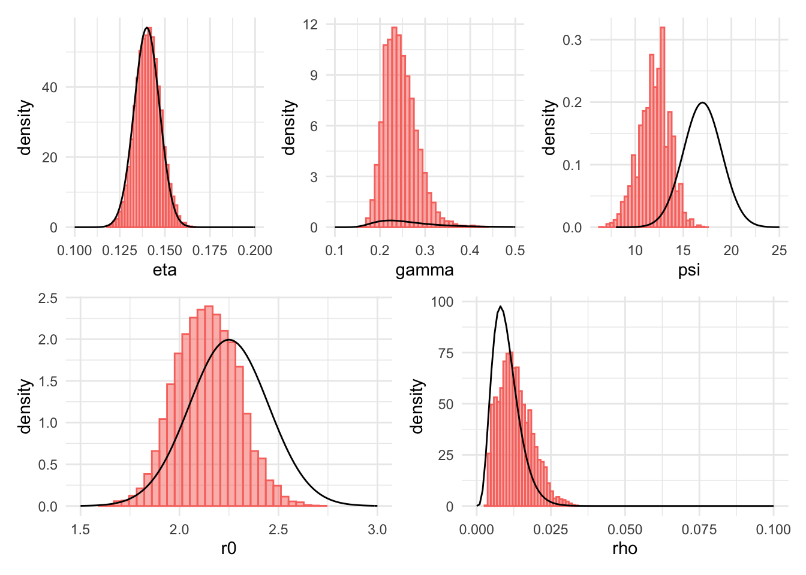
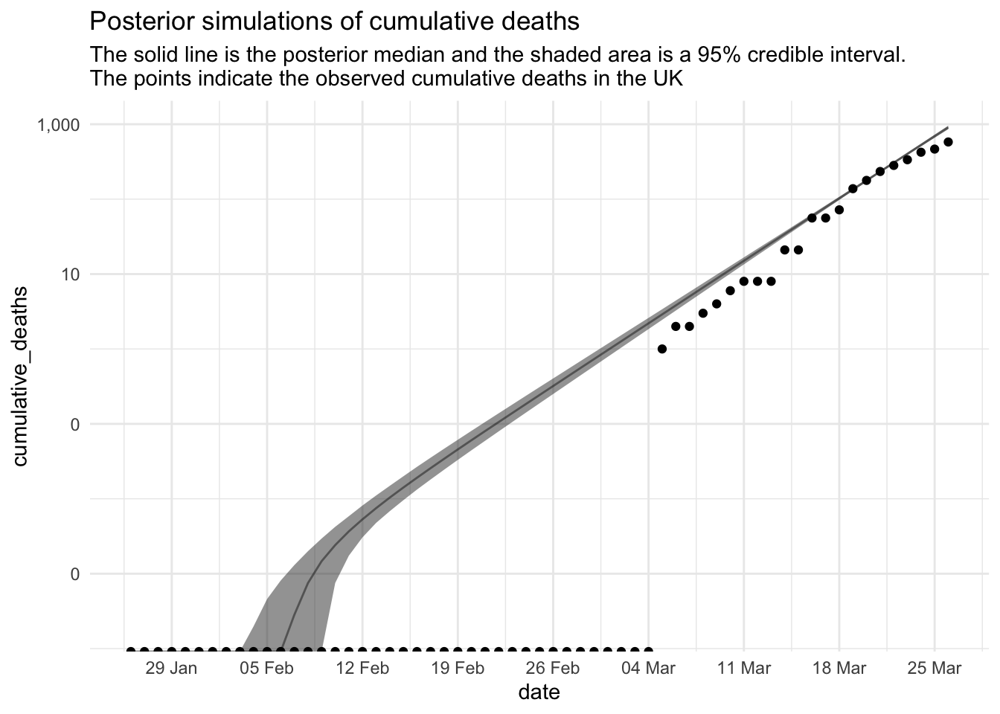
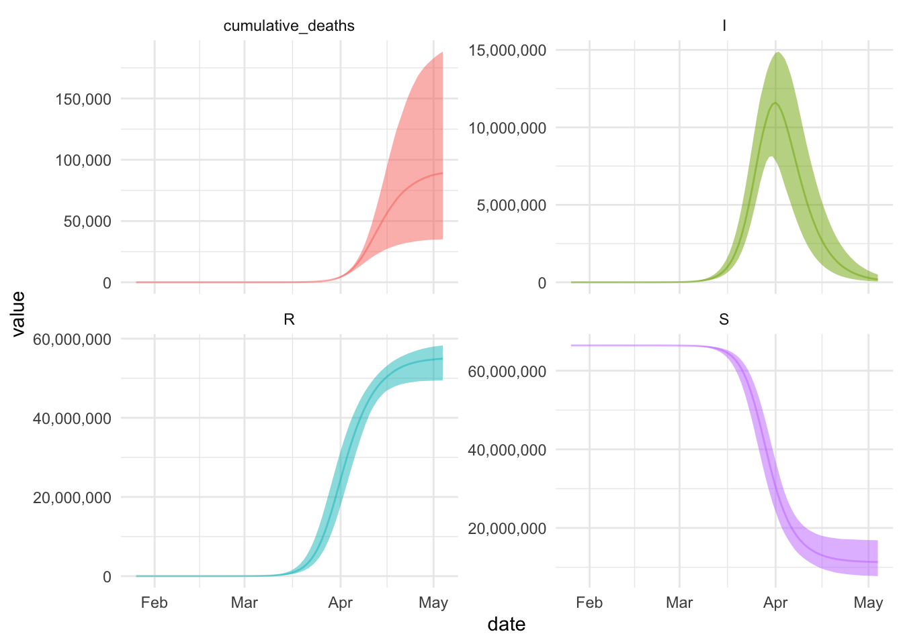

Warning: package 'tidyr' was built under R version 4.1.2
library(dplyr)
Warning: package 'dplyr' was built under R version 4.1.2
Attaching package: 'dplyr'
The following objects are masked from 'package:stats':
filter, lag
The following objects are masked from 'package:base':
intersect, setdiff, setequal, union
library(readr)
Warning: package 'readr' was built under R version 4.1.2
library(ggplot2)library(jonnylaw)library(deSolve)
Warning: package 'deSolve' was built under R version 4.1.2
library(patchwork)theme_set(theme_minimal())
Johns Hopkins University have put together a repository containing confirmed cases of COVID19, deaths and recovered patients. Below we plot the confirmed cases, confirmed recovered and deaths.
Joining, by = c("province_state", "country_region", "lat", "long", "date")
Joining, by = c("province_state", "country_region", "lat", "long", "date")
Warning: Transformation introduced infinite values in continuous y-axis
Transformation introduced infinite values in continuous y-axis

SIR Model
The system of ordinary differential equations (ODE) for the Susceptible Infected Recovered (SIR) model is given by
\[\begin{align}
& \frac{dS}{dt} = - \frac{\beta I S}{N}, \\
& \frac{dI}{dt} = \frac{\beta I S}{N}- \gamma I, \\
& \frac{dR}{dt} = \gamma I,\\
& N = S + I + R.
\end{align}\]
Where \(S\) is the number of susceptible, \(I\) the total infected and \(R\) the total recovered. \(\gamma\) is the recovery rate (\(1/\gamma\) is the infectious period), \(\beta\) is the infection rate (\(1/\beta\) is the time between contacts). These parameters are unobserved.
We can Use deSolve to solve the ODE system startin with an initial state of 66.4 million people susceptible and one infected. This produces a simulation conditional on the parameters chosen. The parameters can change depending on each countries reaction to the virus. For instance the infection rate can be lowered by quarantine or social distancing, thus reducing the contact rate \(\beta\).
parameters <-c(beta =0.5, gamma =1/4.5)initial_state <-c(S =66.4e6, I =1, R =0) sir <-function(t, state, parameters) {with(as.list(c(state, parameters)), { N <-sum(S, I, R) dS =-beta * S * I / N dI = beta * S * I / N - gamma * I dR = gamma * Ilist(c(dS, dI, dR)) }) }times <-seq_len(100)out <-ode(y = initial_state, times = times, func = sir, parms = parameters)
Don't know how to automatically pick scale for object of type deSolve/matrix. Defaulting to continuous.
where \(\rho\) is the proportion of the population at risk of severe disease, \(\eta\) is the probability of dying with the severe disease. \(R_{t-\psi}\) is the removed population with a delay between the time of infection represented by \(\psi\). The parameters are given prior distributions in the paper, we can simulate multiple trajectories of the cumulative deaths by first simulating from the prior distribution then solving the SIR system. The prior distributions as given in the paper are
There is also a parameter for the time of introduction relative to the time of the first reported case, \(\tau\). It has a strange prior distribution, being uniform from \(-\infty\) to \(\infty\). Obviously this parameter can not be positive, since a confirmed case indicates that the time of introduction is in the past.

We can simulate more times from the prior and calculate the empirical intervals instead of plotting raw trajectories. The initial state is \(S = 66.44 \times 10^6\), \(I = 1\) and \(R = 0\). The initial time is taken to be one week before the first confirmed case in the UK.
Warning: Transformation introduced infinite values in continuous y-axis
Transformation introduced infinite values in continuous y-axis
Transformation introduced infinite values in continuous y-axis
Transformation introduced infinite values in continuous y-axis
Transformation introduced infinite values in continuous y-axis

Inference method
The inference method is explained clearly in Lourenço et al (2017), albeit with a different model. The Metropolis algorithm with a symmetric random walk proposal distribution is used, the likelihood is the product of independent Poisson distributions
log_likelihood_sir <-function(parameters, ys, initial_state) { initial_state <-c(S =60e6, I =1, R =0) # # Transition function sir <-function(t, state, parameters) { beta <- parameters[1] * parameters[2] gamma <- parameters[2]with(as.list(state), { N <-sum(S, I, R) dS =-beta * S * I / N dI = beta * S * I / N - gamma * I dR = gamma * Ilist(c(dS, dI, dR)) }) } sir_sim <- deSolve::ode(y = initial_state,times =seq_along(ys),func = sir,parms = parameters ) cumulative_deaths <-function(t, R, parameters) { R[max(1, t - parameters[5])] * parameters[3] * parameters[4] } lambdas <- purrr::map_dbl(sir_sim[, 1], ~cumulative_deaths(t = .x, sir_sim[, 4], parameters)) ll <-sum(dpois(x = ys, lambda = lambdas, log =TRUE))if_else(is.nan(ll) ||is.na(ll), -Inf, ll)}
Then we specify the prior distributions.
log_prior <-function(parameters) { r0 = parameters[1]; gamma = parameters[2]; rho = parameters[3] eta = parameters[4]; psi = parameters[5]dnorm(1/gamma, mean =4.5, sd =1, log =TRUE) +dnorm(psi, mean =17, sd =2, log =TRUE) +dnorm(r0, mean =2.25, sd =0.2, log =TRUE) +dnorm(eta, mean =0.14, sd =0.007, log =TRUE) +dgamma(rho, shape =5, rate =5/0.01, log =TRUE)}proposal <-function(p) { p *exp(rnorm(5, sd =c(0.02, 0.02, 0.02, 0.02, 0.05)))}initial_parameters <-c(r0 =2.25, gamma =1/4.5, rho =0.01, eta =0.14, psi =17)ys <- uk %>%pull(deaths)
We initialise the parameters at the mean of the prior distributions and simulate 1 million iterations from the Metropolis algorithm. The first half are discarded and every 100th iteration is retained in an attempt to reduce auto-correlation in the chain.
Warning: Strategy 'multiprocess' is deprecated in future (>= 1.20.0). Instead,
explicitly specify either 'multisession' or 'multicore'. In the current R
session, 'multiprocess' equals 'multicore'.
Warning: UNRELIABLE VALUE: Future ('<none>') unexpectedly generated random
numbers without specifying argument 'seed'. There is a risk that those random
numbers are not statistically sound and the overall results might be invalid.
To fix this, specify 'seed=TRUE'. This ensures that proper, parallel-safe random
numbers are produced via the L'Ecuyer-CMRG method. To disable this check, use
'seed=NULL', or set option 'future.rng.onMisuse' to "ignore".
Warning: UNRELIABLE VALUE: Future ('<none>') unexpectedly generated random
numbers without specifying argument 'seed'. There is a risk that those random
numbers are not statistically sound and the overall results might be invalid.
To fix this, specify 'seed=TRUE'. This ensures that proper, parallel-safe random
numbers are produced via the L'Ecuyer-CMRG method. To disable this check, use
'seed=NULL', or set option 'future.rng.onMisuse' to "ignore".

`stat_bin()` using `bins = 30`. Pick better value with `binwidth`.

The next plot shows both the prior and posterior distribution. The prior is the solid black line and the posterior samples are plotted in a histogram. Most of the prior distributions are narrow and hence have resulted in little change. The posterior mean of the infectious period, \(1/gamma\) is approximately 4 days, down from the prior mean of 4.5. The posterior mean of \(\psi\) is, 13.5, 3.5 days shorter than the prior mean.
`stat_bin()` using `bins = 30`. Pick better value with `binwidth`.
`stat_bin()` using `bins = 30`. Pick better value with `binwidth`.
`stat_bin()` using `bins = 30`. Pick better value with `binwidth`.
`stat_bin()` using `bins = 30`. Pick better value with `binwidth`.
`stat_bin()` using `bins = 30`. Pick better value with `binwidth`.

Now plot the posterior cumulative death curve.
Warning: Transformation introduced infinite values in continuous y-axis
Transformation introduced infinite values in continuous y-axis
Transformation introduced infinite values in continuous y-axis
Transformation introduced infinite values in continuous y-axis

Let’s simulate forward 100 days from the hypothesised start date, 2020-01-26 using the posterior distribution.

Citation
BibTeX citation:
@online{law2020,
author = {Jonny Law},
title = {Bayesian {Inference} for an {SIR} {Model}},
date = {2020-03-27},
langid = {en}
}
For attribution, please cite this work as:
Jonny Law. 2020. “Bayesian Inference for an SIR Model.”
March 27, 2020.